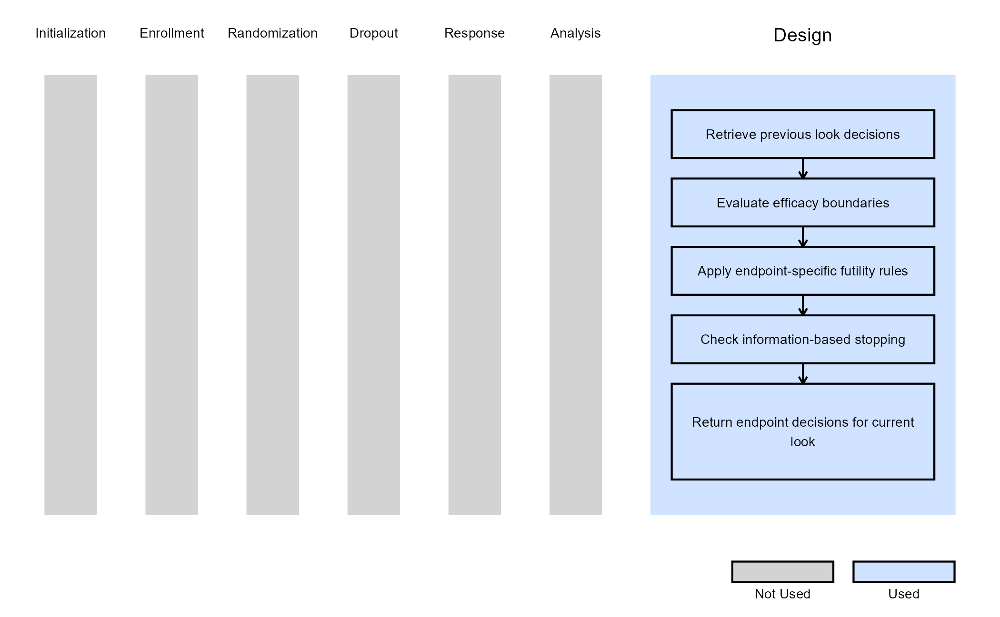

Multiple Endpoints - Design
Anoop Singh Rawat, Gabriel Potvin
February 16, 2026
MEPDesign.RmdThis example is related to the Integration Point: Design - Multiple Endpoints. Click the link for setup instructions, variable details, and additional information about this integration point.
- Study objective: Two Arm Confirmatory - Multiple Endpoints
- Number of endpoints: Multiple Endpoints (any number)
- Endpoint type: Any combination of Time-to-Event, Binary, and Continuous
- Task: Design
Introduction
This example illustrates how to implement custom decision-making logic for Multiple Endpoints designs into East Horizon using R functions in the context of 2-arm clinical trials with multiple endpoints. This integration point enables the customization of the statistical test for the treatment effect, the multiplicity adjustment method, and the decision rules, similarly to the Analysis and Multiplicity Adjustment integration points of other designs. The example supports an arbitrary number of endpoints, heterogeneous endpoint types, and look-specific efficacy and futility rules.
In the R directory of this example you will find the following R file:
- GetMEPDecision.R - Contains the user-defined design logic applied at each analysis look.
Example 1 - Custom Decision-Making Logic for Multiple Endpoints
This example is related to this R file: GetMEPDecision.R
The function GetMEPDecision is called at each analysis look and allows users to override or extend the native decision engine. The function evaluates efficacy, futility, and trial continuation for each endpoint independently, using information from the current analysis look, accumulated data summaries, and trial design specifications. It then returns a vector of decisions (one per endpoint) indicating whether to continue, declare efficacy, or declare futility. All decisions are made using data available at the current look only.
Efficacy Decision Logic
For endpoints that are still ongoing (Decision = 0):
- The function retrieves the raw p-value from the native MEP test statistics.
- The p-value is compared against the efficacy boundary on the p-value scale for the current look.
- If the p-value is below the boundary, efficacy is declared for that endpoint.
Futility Decision Logic
If efficacy is not declared, futility is evaluated if the futility flag is enabled for the current look and endpoint. The futility criterion depends on the endpoint type:
- Time-to-Event endpoints: Futility is declared if the observed hazard ratio exceeds the futility threshold.
- Binary and Continuous endpoints: Futility is declared if the observed treatment effect (delta) is below the futility threshold.
Endpoints may also stop for futility if sufficient or insufficient information has been reached:
- If the number of observed events (TTE) or completers (binary or continuous) meets or exceeds the target information, the endpoint is stopped for futility.
- If the endpoint status indicates insufficient information at the current look, futility is declared.
Additionally, if the current look is the last efficacy look and efficacy is not declared, the endpoint is stopped for futility. Then, the final decisions are returned.
The figure below illustrates where this example fits within the R integration points of Cytel products, accompanied by a flowchart outlining the general steps performed by the R code.
